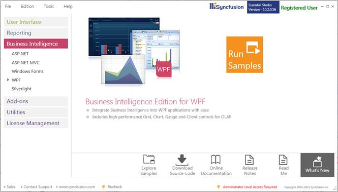
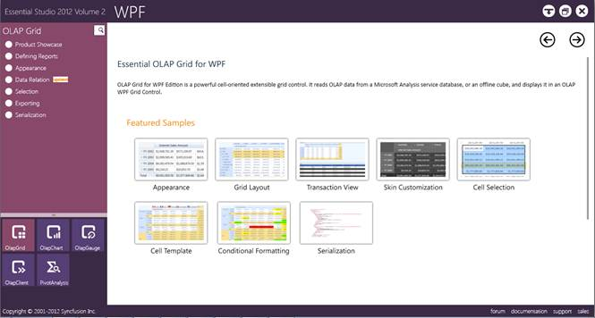
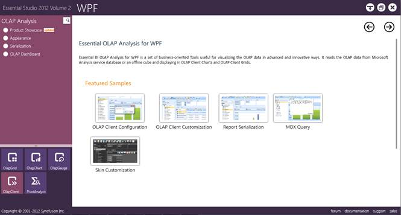

This section covers the location of the installed samples and describes the procedure to run the samples through the sample browser and online. It also provides the location of the source code.
Samples Installation Location
The OLAP Client samples are installed in the following location, locally on the disk:
C:\Syncfusion\<Version Number>\BI\WPF\OlapClient.WPF\Samples
Viewing Samples
To view the samples, follow the steps below:
1. Click Start-->All Programs-->Syncfusion-->Essential Studio <version number> -->Dashboard. Syncfusion Essential Studio Dashboard <version number> -> BI.

Figure 2: Syncfusion Essential Studio Dashboard BI
2. In the Dashboard window, click Run Samples for WPF under BI Edition panel. The BIWPF Sample Browser window is displayed.
 Note: You can view the samples in any of the
following three ways:
Note: You can view the samples in any of the
following three ways:
· Run Locally Installed Samples-Click to view the locally installed samples.
· Online Samples-Click to view online samples.
· Explore Samples-Explore BI WPF samples on disk.

Figure 3 : BI WPF Sample Browser
3. Click OlapClient. The OLAPClient samples are displayed.

Figure 5: OLAP Analysis Sample – OLAP Client
4. Select any sample and browse through the features.
Source Code Location:
The default location of the OLAP Client source code is:
[System Drive]:\Program Files\Syncfusion\Essential Studio\[Version Number]\BI\OlapClient.WPF\Src